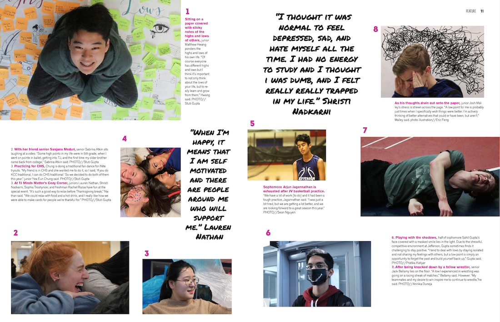

Laughing with love

Sitting with her friend senior Sanjana Meduri, senior Sabrina Atkin sits laughing at a video. “Some high points in my life [include] the first time my older brother came back from college,” Sabrina Atkin said when asked about when she has felt her best.
The Process
I took this photograph for our 2019 December photo issue. For the December photo issue I designed two spreads centered on the topic of highs and lows. In these two spreads, I played with idea of emotional highs and lows and literal highs and lows in terms of camera angle. I love how this close-up in particular captures such a pure moment of laughter, really encapsulating the friendship aspect of the Jefferson environment.
This is the spread that the photograph was ultimately placed in.